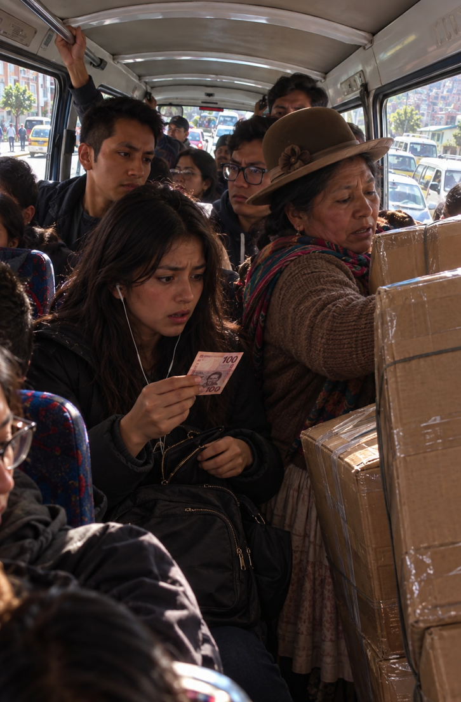

1/3
Camino actual: Retorno en Hora Pico
🔊 Narración:
Tras defender su proyecto formativo en la universidad, Alía subió agotada al repleto minibús 834 hacia Achumani. En Obrajes, el caos estalló cuando una señora subió con inmensas cajas, incomodando a los pasajeros.
Para empeorar su suerte, al buscar sus 3 bolivianos del pasaje, Alía descubrió con horror que solo tenía un billete nuevecito de 100.
♦ ───── ♦